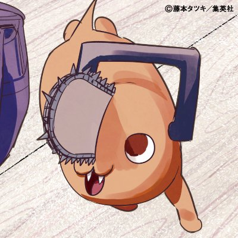

What is Chainsaw Man?

Chainsaw Man is an action-gore shonen manga made by Fujimoto Tatsuki and serialized in Weekly Shonen Jump from December 2018 to December 2020. The manga has 11 volumes and 97 chapters for the first part. The Japanese version was published by Shueisha and the English version was published by Viz Media. As of today, the manga has 13 million copies in circulation in Japan while the anime series is in production and will be aired in Fall 2022. Chainsaw Man will return on July 13, 2022 for the second part and moved the serialization to Shonen Jump+.
Story
Denji is a poor young boy who only has Pochita, a chainsaw devil in a pet-sized dog form. He works as a devil hunter under some yakuza to pay his dad's huge debt. One day, he was killed and revived as a Chainsaw Man after receiving Pochita's heart. Then he met Makima, a mysterious woman-the head of Public Safety Devil Extermination Special Division 4, and was taken to become a devil hunter and her pet. But, while he will learn everything that his simple mind doesn't know and meet another human and fiend (devil form human), danger awaits him as he has the Chainsaw's heart. Will Denji's dream to live a laid-back life become true?
Characters
Denji
A blond-haired young boy who works as a devil hunter under the yakuza to get a life and pay his Dad debt. He was killed once and revived as a Chainsaw Man after receiving the heart from his devil pet, Pochita. He is simple-minded and wants to live a laid-back life. He has an affection for Makima after she met him and made him work as a Public Safety Devil Hunter.
Pochita

Chainsaw devil in a cute dog-sized. Denji took care of his wound and gradually he become attached to Denji. Give his heart to revive Denji that has been killed once and made a contract with him to live and fulfill his life.
Makima

The head of Public Safety Devil Extermination Special Division 4 who took Denji to work as a Devil Hunter under her supervision. She is a mysterious woman and known has a connection with the upper head of government. Can smell devil scents. She has given the vibe of evil and an angel behind her smile as her intention for taking Denji is unknown.
Power
A fiend, a devil in a human form. Works as a Public Safety Devil Hunter under Makima's supervision. Very egotistical and looks down on humans. She has two horns on her head. Her only friend is her cat, Meowy. Live under the same roof with Aki and Denji.
Aki Hayakawa
Makima's subordinate and Denji's co-worker at Public Safety Devil Extermination Special Division 4. He is in charge to keep an eye on Denji and Power and live together with them. He has a contract with Fox Devil. Likes Makima too.
Reviupage
So, why do I make this page when there are many websites with the same information that I have told above? Yes, it's because I really like this manga and I want to tell everyone why you should read Chainsaw Man. Let's check it out!
The Story
The story is very simple. It's about a poor boy in the Devil world where he died and was revived and got a new power. But that's not it. In exchange for this power, our main character (Denji) has to work as a Public Safety Devil Hunter. And as the story goes far, many characters will die, the enemy & the devils become more and more powerful, and Denji's life turns upside down. After re-reading this manga, I realize that this title doesn't have a filler chapter like a long-running manga. It's a very straightforward read, one character shows up and dies. But, the main purpose of this dead character is so the story will go with progress. Chainsaw Man offers you a funny moment, a what-the-f-is-going-on moment, a badass moment, a wow moment, and a sad moment.
The Art
Yes. Visually appealing. Even though it's in black and white, you can't help but captivate by the dynamic action this manga has. Not only for the action, but some of the panels would be great as a meme. Fujimoto Sensei also likes to make the SFX connected with the panel and it's very aesthetic. The character's facial expression is also great. The villain design is very intriguing. And many page spread of the manga that was too good only to be seen in a second. Some of this art can be described like this:
The Characters
Is Denji a shonen-troupe main character? Well yes and no. Yes because he has a dream, he is willing to fulfill his dream, and he has more emotions as the story goes on. No, because he is a simp, unintelligent, and very true to his desire. Can we relate to him? It depends. But I think his goofy personality comes from his uneducated self and the miserable life he had in the past. Characters like Makima, Aki, and Power become a key to Denji's development, and also the villains, the Public Safety Division, the evil mastermind that I don't mention here make the story develop.
Summary
Did this reviupage convince you? If yes, I'm very happy to share. If no, well no problem. Maybe it's not your cup of tea or my writing is not captivating enough. Nevertheless, I thank for you that you scrolled down here. Thanks for reading this.